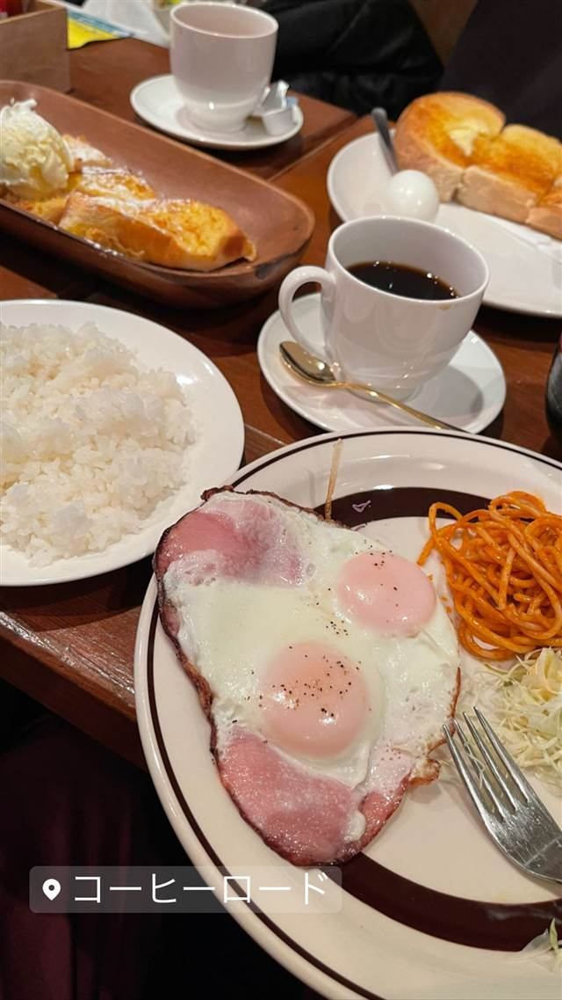

和食・定食 · 定食・食堂 · 中野
蔡菜食堂（サイサイショクドウ）
孤独のグルメにも登場した上海家庭料理の麻婆豆腐
蔡菜食堂
中野駅近くにある上海家庭料理の店。上海出身の店主・蔡才生さんが営み、店名の通り「蔡家の家庭料理」がコンセプト。ドラマ「孤独のグルメ」にも登場した。
TRIVIA
豆知識
- 店名「蔡菜食堂」は店主・蔡さん一家の家庭料理という意味を持つ
- 「孤独のグルメ」のお正月スペシャルに登場した店
REVIEWS
世間の評判
3.53食べログ
上海家庭料理の味と予約の取りにくさ
- スペアリブの黒酢ソース炒めなど本格的な味を高く評価する声が多い
- 16席と席数が少なく週末は2週間前から予約が必要という声が多い
- 小さな店で座席がとても近く家族経営の温かい接客を評価する声もある
食べログ 口コミ261件
| 創業 | 2005年9月創業 |
|---|---|
| 看板 | 麻婆豆腐、排骨（スペアリブ）、レバニラ炒めなど上海家庭料理。 |
| 掲載・評価 | テレビドラマ「孤独のグルメ」シーズン5お正月スペシャルに登場。 |
| どこから | 23区の外れ・近郊 |
| 行くなら | 予約必須 |
| 営業時間 | 月・火 17:00-22:00 水 休み 木〜土 17:00-22:00 日 休み |
| 予算 | 夜 ¥3,000～¥3,999 |
| 場所 | 中野駅 東京都中野区中野3-35-2 |
| メモ | 水・日曜定休。中野駅から徒歩3分、中野マルイ裏手。 |
食べたもの：麻婆豆腐
NEARBY
近い店・同じ系統の店
-

喫茶店 中野駅 コーヒーロード 「マツコの知らない世界」で紹介されたモーニングのバタートースト 昼 ～¥999 夜 ¥1,000～¥1,999 -
 定食・食堂 秋葉原駅
青島食堂 秋葉原店
新潟・長岡発祥、生姜を効かせた豚骨醤油ラーメン
昼 ～¥999 夜 ～¥999
定食・食堂 秋葉原駅
青島食堂 秋葉原店
新潟・長岡発祥、生姜を効かせた豚骨醤油ラーメン
昼 ～¥999 夜 ～¥999
-
 定食・食堂 四ツ谷駅
かつれつ 四谷たけだ
1935年築地創業「洋食たけだ」の流れを汲む、食べログ百名店の生姜焼き定食
昼 ¥1,000～¥1,999 夜 ¥1,000～¥1,999
定食・食堂 四ツ谷駅
かつれつ 四谷たけだ
1935年築地創業「洋食たけだ」の流れを汲む、食べログ百名店の生姜焼き定食
昼 ¥1,000～¥1,999 夜 ¥1,000～¥1,999
-
 定食・食堂 広尾
麻布食堂
1992年創業、卵たっぷりのオムライスとハンバーグの洋食店
昼 ¥1,000～¥1,999 夜 ¥3,000～¥3,999
定食・食堂 広尾
麻布食堂
1992年創業、卵たっぷりのオムライスとハンバーグの洋食店
昼 ¥1,000～¥1,999 夜 ¥3,000～¥3,999
-
 定食・食堂 五反田
あげ福
ミート矢澤と同じ精肉卸が営む、岩中豚のコロッケ定食
夜 ¥3,000～¥3,999
定食・食堂 五反田
あげ福
ミート矢澤と同じ精肉卸が営む、岩中豚のコロッケ定食
夜 ¥3,000～¥3,999
-
 定食・食堂 渡久地
きしもと食堂(本店)
薪の木灰の上澄み液をかん水代わりに使う戦前からの製法で今も麺を打つ
昼 ¥1,000～¥1,999 夜 ¥1,000～¥1,999
定食・食堂 渡久地
きしもと食堂(本店)
薪の木灰の上澄み液をかん水代わりに使う戦前からの製法で今も麺を打つ
昼 ¥1,000～¥1,999 夜 ¥1,000～¥1,999